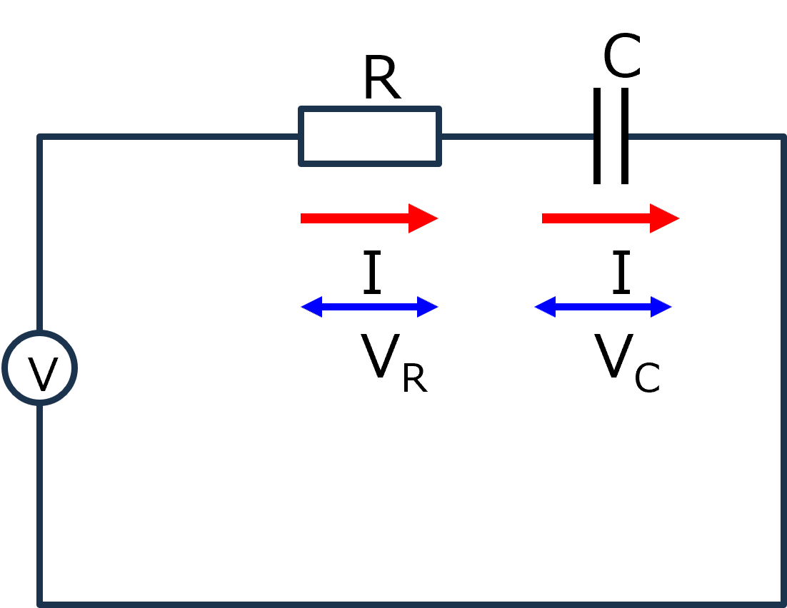
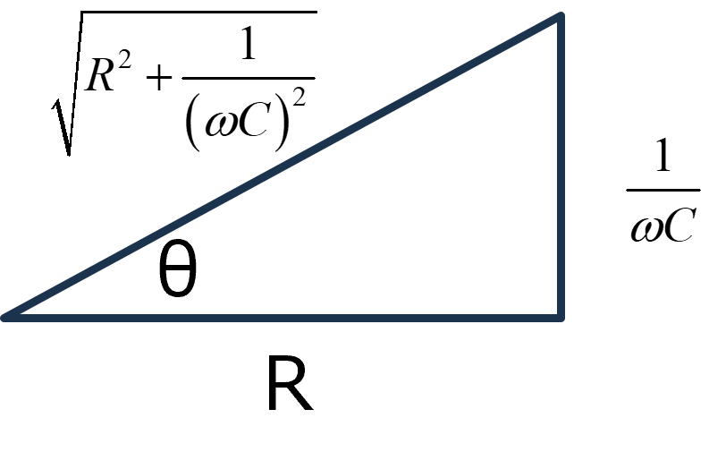
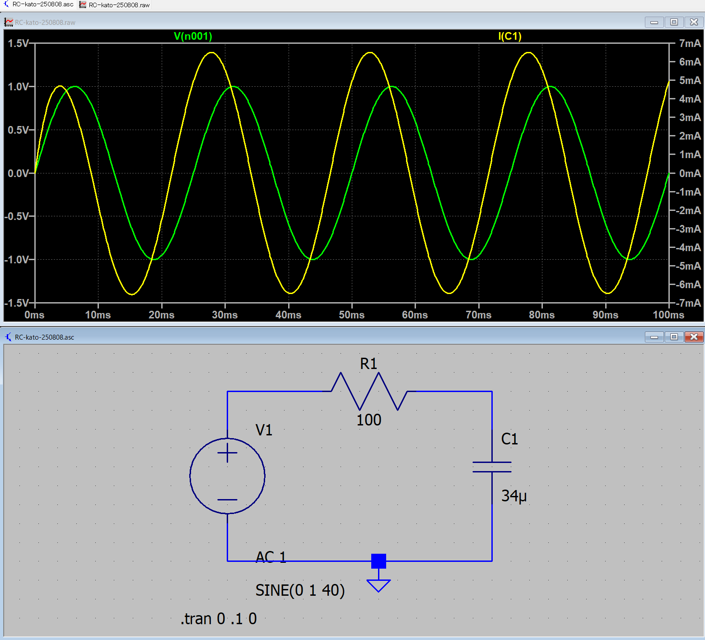
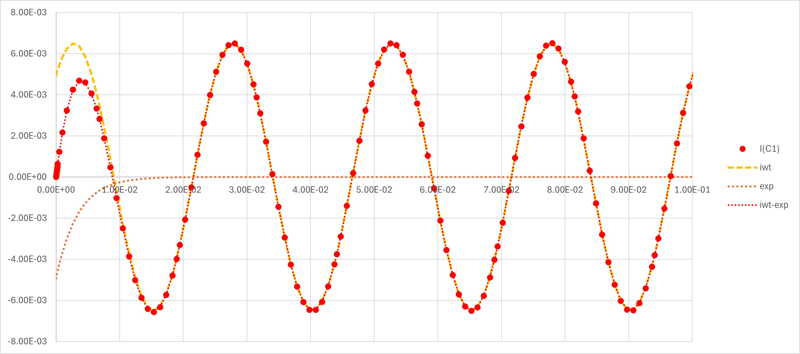

回路-09-2
RC直列交流回路を真面目に解く - 電流を主体に考える

RとCが直列に並んだ交流回路をまじめに考えます．式は，
\(\Large R \cdot I(t) + \displaystyle \frac{1}{ C} \int I(t) \ dt = V_0 \cdot e^{ j \omega t} \)
となるので，一回微分して，
\(\Large \displaystyle R \frac{d \ I(t)}{dt} + \frac{1}{ C} I(t) = j \omega \cdot V_0 \cdot e^{ j \omega t} \)
\(\Large \displaystyle \frac{d \ I(t)}{dt} = - \frac{1}{ RC} I(t) +\frac{ j \omega}{R} \cdot V_0 \cdot e^{ j \omega t} \)
定数変化法により，
\(\Large \displaystyle I(t) = A_0 \cdot e^{- \frac{1}{ RC} t} \)
\(\Large \displaystyle \frac{d \ I(t)}{dt} = A_0' \cdot e^{- \frac{1}{ RC} t} \color{blue}{- \frac{1}{ RC} \cdot A_0 \cdot e^{- \frac{1}{ RC} t}}\)
\(\Large \displaystyle = \color{blue}{- \frac{1}{ RC} I(t)} +\frac{ j \omega}{R} \cdot V_0 \cdot e^{ j \omega t} \)
\(\Large \displaystyle A_0' \cdot e^{- \frac{1}{ RC} t} = \frac{ j \omega}{R} \cdot V_0 \cdot e^{ j \omega t}\)
\(\Large \displaystyle A_0' = e^{ \frac{1}{ RC} t} \cdot \frac{ j \omega}{R} \cdot V_0 \cdot e^{ j \omega t}
=
\frac{ j \omega}{R} \cdot V_0 \cdot e^{ (j \omega + \frac{1}{ RC})t}\)
\(\Large \displaystyle A_0 = \frac{ j \omega}{R} \cdot V_0 \frac{1}{j \omega + \frac{1}{ RC}} \cdot e^{ (j \omega + \frac{1}{ RC})t} + D\)
\(\Large \displaystyle I(t) = \left( V_0 \cdot \frac{ j \omega}{R} \cdot \frac{1}{j \omega + \frac{1}{ RC}} \cdot e^{ (j \omega + \frac{1}{ RC})t} + D\right) \cdot e^{- \frac{1}{ RC} t} \)
\(\Large \displaystyle = V_0 \cdot \frac{ j \omega}{R} \cdot \frac{1}{j \omega + \frac{1}{ RC}} \cdot e^{ j \omega t} + D \cdot e^{- \frac{1}{ RC} t} \)
\(\Large \displaystyle I(0) = 0 \)
\(\Large \displaystyle I(0) = V_0 \cdot \frac{ j \omega}{R} \cdot \frac{1}{j \omega + \frac{1}{ RC}} \cdot e^{ j \omega \ 0 } + D \cdot e^{- \frac{1}{ RC} \ 0} \)
\(\Large \displaystyle V_0 \cdot \frac{ j \omega}{R} \cdot \frac{1}{j \omega + \frac{1}{ RC}} + D =0 \)
\(\Large \displaystyle D = - V_0 \cdot \frac{ j \omega}{R} \cdot \frac{1}{j \omega + \frac{1}{ RC}} \)
\(\Large \displaystyle I(t) = V_0 \cdot \frac{ j \omega}{R} \cdot \frac{1}{j \omega + \frac{1}{ RC}} \cdot \left( e^{ j \omega t} - e^{- \frac{1}{ RC} t} \right) \)
\(\Large \displaystyle = V_0 \cdot \frac{ j \omega}{R} \cdot \frac{1}{j \omega + \frac{1}{ RC}} \cdot \frac{R/\omega}{R/\omega} \cdot \left( e^{ j \omega t} - e^{- \frac{1}{ RC} t} \right) \)
\(\Large \displaystyle = V_0 \cdot \frac{j}{j R + \frac{1}{ \omega C}} \cdot \left( e^{ j \omega t} - e^{- \frac{1}{ RC} t} \right) \)
\(\Large \displaystyle = V_0 \cdot \frac{1}{ R - \frac{j}{ \omega C}} \cdot \left( e^{ j \omega t} - e^{- \frac{1}{ RC} t} \right) \)
\(\Large \displaystyle = V_0 \cdot \frac{R + \frac{j}{ \omega C}}{ R^2 + \frac{1}{ (\omega C)^2 }} \cdot \left( e^{ j \omega t} - e^{- \frac{1}{ RC} t} \right) \)
\(\Large \displaystyle = V_0 \cdot \frac{R + \frac{j}{ \omega C}}{ R^2 + \frac{1}{ (\omega C)^2 }} \cdot \frac{\sqrt{R^2 + \frac{1}{ (\omega C)^2 }}}{{ \sqrt{R^2 + \frac{1}{ (\omega C)^2 }}}} \cdot \left( e^{ j \omega t} - e^{- \frac{1}{ RC} t} \right) \)
\(\Large \displaystyle = V_0 \cdot \frac{R + \frac{j}{ \omega C}}{ \sqrt{R^2 + \frac{1}{ (\omega C)^2 }}} \cdot \frac{1 }{{ \sqrt{R^2 + \frac{1}{ (\omega C)^2 }}}} \cdot \left( e^{ j \omega t} - e^{- \frac{1}{ RC} t} \right) \)
ここで，複素数の項を指数に置き換える．

\(\Large \displaystyle cos \ \theta = \frac{R }{ \sqrt{R^2 + \frac{1}{ (\omega C)^2 }}}\)
\(\Large \displaystyle j \cdot sin \ \theta = \frac{ \frac{j}{ \omega C}}{ \sqrt{R^2 + \frac{1}{ (\omega C)^2 }}}\)
\(\Large \displaystyle e^{ j \ \theta} =cos \ \theta + j \cdot sin \ \theta \)
より，
\(\Large \displaystyle \frac{R + \frac{j}{ \omega C}}{ \sqrt{R^2 + \frac{1}{ (\omega C)^2 }}} = e^{ j \ \theta} \)
ここで，
\(\Large \displaystyle tan \ \theta = \frac{1} {\omega RC} \)
となります．したがって，
\(\Large \displaystyle I(t) = V_0 \cdot \frac{R + \frac{j}{ \omega C}}{ \sqrt{R^2 + \frac{1}{ (\omega C)^2 }}} \cdot \frac{1 }{{ \sqrt{R^2 + \frac{1}{ (\omega C)^2 }}}} \cdot \left( e^{ j \omega t} - e^{- \frac{1}{ RC} t} \right) \)
\(\Large \displaystyle = V_0 \cdot e^{ j \ \theta} \cdot \frac{1 }{{ \sqrt{R^2 + \frac{1}{ (\omega C)^2 }}}} \cdot \left( e^{ j \omega t} - e^{- \frac{1}{ RC} t} \right)\)
\(\Large \displaystyle = V_0 \cdot \frac{1 }{{ \sqrt{R^2 + \frac{1}{ (\omega C)^2 }}}} \cdot \left\{ e^{ j (\omega t + \theta)} - e^{ j \ \theta} \cdot e^{- \frac{1}{ RC} t} \right\}\)
となります．ここで，三角関数に戻すために，虚数部分のみ取り出すと，
\(\Large \displaystyle Im [ I(t) ] = Im \left[V_0 \cdot \frac{1 }{{ \sqrt{R^2 + \frac{1}{ (\omega C)^2 }}}} \cdot e^{ j (\omega t + \theta)} \right]
- Im \left[V_0 \cdot \frac{1 }{{ \sqrt{R^2 + \frac{1}{ (\omega C)^2 }}}} \cdot e^{ j \ \theta} \cdot e^{- \frac{1}{ RC} t} \right] \)
\(\Large \displaystyle = V_0 \cdot \frac{1 }{{ \sqrt{R^2 + \frac{1}{ (\omega C)^2 }}}} \cdot sin (\omega t + \theta)
- V_0 \cdot \frac{1 }{{ \sqrt{R^2 + \frac{1}{ (\omega C)^2 }}}} \cdot sin \ \theta \cdot e^{- \frac{1}{ RC} t} \)
十分な時間が経てば，第二項は0となるので，
\(\Large \displaystyle I(t) \sim \frac{V_0 }{{ \sqrt{R^2 + \frac{1}{ (\omega C)^2 }}}} \cdot sin (\omega t + \theta) \)
\(\Large \displaystyle \theta = tan^{-1} \ \frac{1} {\omega RC} \)
となり，インピーダンスを用いた結果と一致します．
実際に過渡現象のシミュレートしてみると，

となり，電流（黄色）が振動しながら徐々に変化して落ち着いていきます．最初の方を計算してみると，

赤点 ： LT-spiceで求めた過渡現象
黄色点線 ： 上記の式の第一項（三角関数）と第二項（指数）
赤点線 ： 黄色点線を足したもの
となります．ぴったり一致することがわかります．
次は，０９－３．RC直列交流回路をラプラス変換で真面目に解く，です．